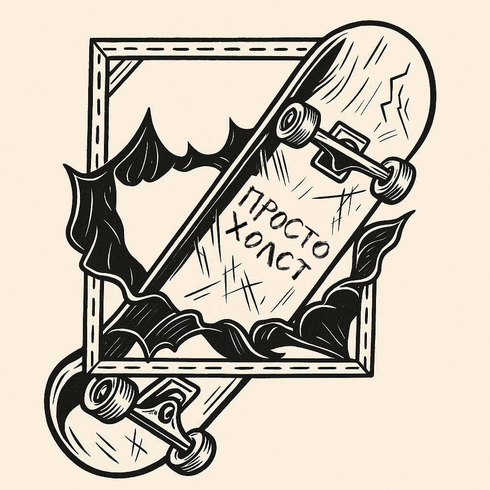
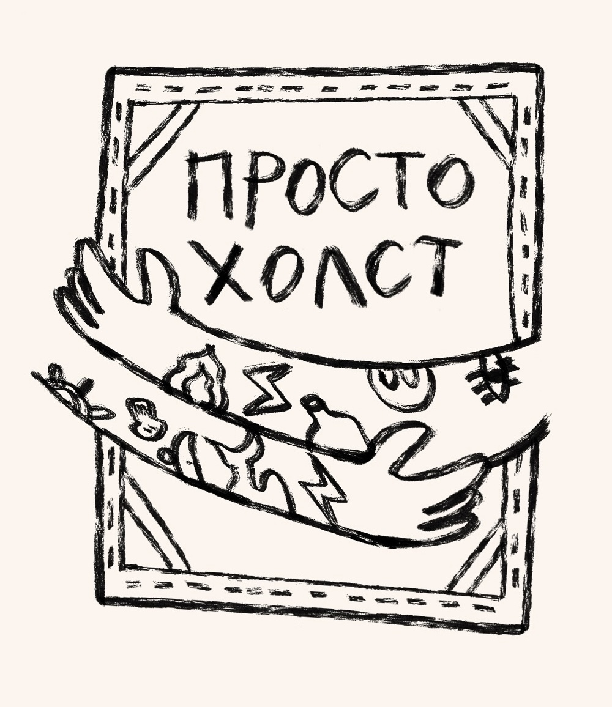
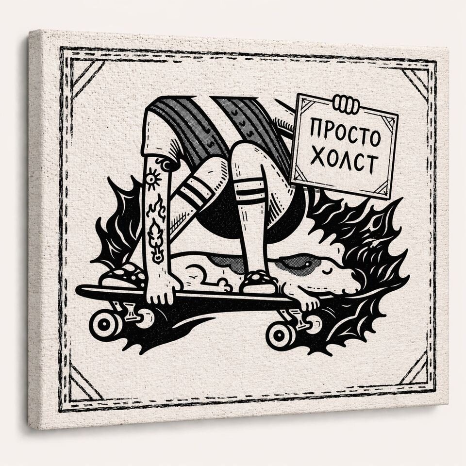

ХОЛСТ ЕСТЬ.
ДЕЛО
ЗА ТОБОЙ.
Делаем холсты для твоих картин.
Хлопок, лён и нужный тебе размер.

Сделаноруками
Холст под кистью.
ОТ ЧИСТОГО
ХОЛСТА
ДО РАМЫ.
Есть идея? Подберём для неё основу.
Картина уже готова? Поможем оформить.

Холсты
Хлопковые и льняные холсты на подрамнике. Готовые — в наличии, под твою задумку — на заказ.
Посмотреть на АвитоПодрамники
Основа для будущей картины. Напиши нужный размер — обсудим подрамник под твою работу.
Обсудить подрамникНатяжка
Натянем твой холст на подрамник. Пришли размеры и фото работы, чтобы обсудить детали.
Написать о натяжкеБагет и рамы
Оформление картин в багет и рамы на заказ. Подберём обрамление, которое подойдёт твоей работе.
Обсудить рамуРазмер, стоимость и сроки обсудим лично.
Текущие предложения — в магазине на Авито.

За холстами — человек
СКЕЙТ.
МАСТЕРСКАЯ.
СВОЁ ДЕЛО.
Это «Просто холст» — мастерская Максима Стукалина в Петербурге.
Максим катается на скейте и делает холсты для живописи. Собирает подрамники, натягивает холсты и оформляет картины в рамы.
Всё начинается с простого: ты рассказываешь, что хочешь написать, — мы помогаем с основой.
Максим вне мастерскойЗаглядывай в мастерскую
Санкт-Петербург,
площадь Ленина, 3